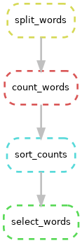
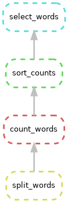
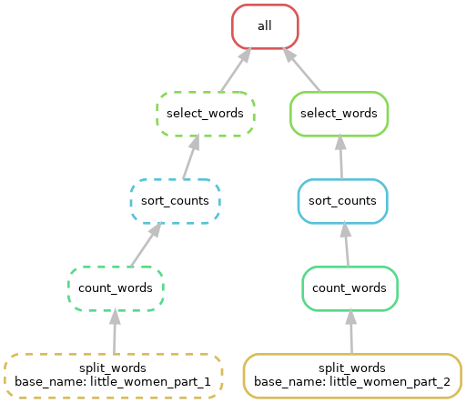

Build a Snakefile
A Snakefile is a text file that decribes your workflow. It is
interpreted by the snakemake command. Building a good
Snakefile is the key step in understanding Snakemake, so we’ll begin
there.
Consider a sample bash script
To build a Snakefile it’s helpful to use a concrete example and also
helpful to adapt an existing script. The script below considers the 1868
novel “Little Women”, by Louisa May Alcott. It outputs a file containing
the ranked name counts for each of the four March sisters: Amy, Beth,
Jo, and Laurie. (It also emits a few intermediate files).
|
alcott_script/alcott_script.sh
|

|
#!/bin/bash
# Which of the March sisters is referred to most often in
# part 1 of the Little Women?
# Split lines into words
cat inputs/little_women_part_1.txt \
| tr -cs '[:alpha:]' '\n' \
> 1.split_words.txt
# Count words
sort 1.split_words.txt | uniq -c \
> 2.count_words.txt
# Sort words by descending count and add header
sort -k1,1nr 2.count_words.txt \
| awk 'BEGIN {print "word\tcount"} { print $2 "\t" $1}' \
> 3.sort_counts.txt
# Select names with respective counts
egrep '^(Jo|Amy|Laurie|Beth)\s' 3.sort_counts.txt > 4.select_words.txt
|
It’s not necessary to understand the command in detail, but it is
helpful to consider the steps with their various outputs:
|
Inputs, steps, and outputs
|
|
inputs/little_women_part_1.txt
|
CHAPTER ONE
PLAYING PILGRIMS
"Christmas won't be Christmas without any presents," grumbled Jo, lying
on the rug.
"It's so dreadful to be poor!" sighed Meg, looking down at her old
dress.
...
|
|
1.split_words.txt
|
CHAPTER
ONE
PLAYING
PILGRIMS
Christmas
won
t
be
Christmas
without
|
|
2.count_words.txt
|
1992 a
75 A
1 aback
1 abase
3 abashed
1 abed
1 abject
3 able
3 abominable
1 abominably
|
|
3.sort_counts.txt
|
word count
and 3811
the 3303
to 2303
a 1992
I 1988
her 1660
of 1490
in 1094
you 1010
|
|
4.select_words.txt
|
Jo 737
Laurie 319
Beth 294
Amy 283
|
To view the results interactively, you can execute the script.
export WORKSHOP_HOME="/nfs/turbo/umms-bioinf-wkshp/workshop/home/${USER}"
cd $WORKSHOP_HOME/project_alcott/alcott_script
./alcott_script.sh
And view excepts of the results in less. (Hit
q key to exit less.)
head inputs/little_women_part_1.txt *.txt | less
Snakemake and the Snakefile
Switch to the alcott_snakemake dir; note there are inputs and a
Snakefile
cd $WORKSHOP_HOME/project_alcott/alcott_snakemake
tree
.
├── inputs
│ ├── little_women_part_1.txt
│ └── little_women_part_2.txt
└── workflow
└── Snakefile
A Snakefile is a simple markdown file.By convention, the snakefile is
named Snakefile and lives in the workflow
sub-directory. The current Snakefile is simply a stub based on the
earlier bash script:
|
workflow/Snakefile
|
# split_lines ###########################################################
#cat inputs/little_women_part_1.txt \
# | tr -cs '[:alpha:]' '\n' \
# > 1.split_words.txt
# count_words ###########################################################
#sort 1.split_words.txt | uniq -c \
# > 2.count_words.txt
## sort_count ###########################################################
#sort -k1,1nr 2.count_words.txt \
# | awk 'BEGIN {print "word\tcount"} { print $2 "\t" $1}' \
# > 3.sort_counts.txt
# select_words ##########################################################
#egrep '^(Jo|Amy|Laurie|Beth)\s' 3.sort_counts.txt > 4.select_words.txt
|
A snakefile is composed of rules; each rule has a name and specifies
directives such as
- input (what the rule requires)
- output (what the rule promises to generate)
- shell (how it will make input into output)
We add the first step in the workflow as a new rule. (Adding below
the existing comment block.) Note that we will keep the input files and
result files in separate directories.
rule split_words:
input: "inputs/little_women_part_1.txt"
output: "results/little_women_part_1.split_words.txt"
shell: "cat inputs/little_women_part_1.txt | tr -cs '[:alpha:]' '\n' > results/little_women_part_1.split_words.txt"
Running Snakemake
- The snakemake python program interprets the
Snakefile and executes rules as appropriate to produce the expected
output.
- The snakemake program is installed as a module on Great Lakes.
- When launching snakemake, You specify the number of cores
(i.e. CPUs) with the -c flag. We will use 1 core.
module load snakemake
module list
# confirm you are in the right working directory
tree
Currently Loaded Modules:
1) python3.10-anaconda/2023.03 2) snakemake/7.32.4
$ tree
.
├── inputs
│ ├── little_women_part_1.txt
│ └── little_women_part_2.txt
└── workflow
└── Snakefile
Run snakemake command as below. Note:
snakemake will look for a Snakefile in the workflow
directory.snakemake emits a log to the screen that include
- run details
- Job stats
- Rule details
- Completion status i.e. (100%) done
snakemake -c1
Building DAG of jobs...
Using shell: /usr/bin/bash
Provided cores: 1 (use --cores to define parallelism)
Rules claiming more threads will be scaled down.
Job stats:
job count
----------- -------
split_words 1
total 1
.
Select jobs to execute...
.
[Mon Jun 10 18:35:41 2024]
rule split_words:
input: inputs/little_women_part_1.txt
output: results/little_women_part_1.split_words.txt
jobid: 0
reason: Missing output files: results/little_women_part_1.split_words.txt
resources: tmpdir=/tmp
.
[Mon Jun 10 18:35:41 2024]
Finished job 0.
1 of 1 steps (100%) done
Complete log: .snakemake/log/2024-06-10T183541.204636.snakemake.log
Check the file system. Note new results/ dir and new file. Note that
snakemake created the results/ dir automatically.
tree
.
├── inputs
│ ├── little_women_part_1.txt
│ └── little_women_part_2.txt
├── results
│ └── little_women_part_1.split_words.txt
└── workflow
└── Snakefile
Also note that snakemake creates a hidden directory
.snakemake/ in the working directory. This holds various
info that help snakemake manage the workflow. It’s extremely rare for
you to need to examine the contents of the .snakemake/
directory, but FYI.
If you re-run snakemake it determines the filesystem is
up to date and no rules need to be triggered.
snakemake -c1
Building DAG of jobs...
Nothing to be done (all requested files are present and up to date).
Complete log: .snakemake/log/2024-06-10T184850.944535.snakemake.log
Add a new rule
In the Snakemake file, add the second step as a new rule below the
first rule. Note that the inputs of this rule match the outputs of the
prior rule.
rule count_words:
input: "results/little_women_part_1.split_words.txt"
output: "results/little_women_part_1.count_words.txt"
shell: "sort results/little_women_part_1.split_words.txt | uniq -c > results/little_women_part_1.count_words.txt"
By default, snakemake only runs the first rule in the
Snakefile. To trigger the new rule, you can specify the desired end
target on the command line.
snakemake -c1 count_words
Note the log output similar to above, but now shows the new rule.
Building DAG of jobs...
Using shell: /usr/bin/bash
Provided cores: 1 (use --cores to define parallelism)
Rules claiming more threads will be scaled down.
Job stats:
job count
----------- -------
count_words 1
total 1
.
Select jobs to execute...
.
[Mon Jun 10 18:52:07 2024]
rule count_words:
input: results/little_women_part_1.split_words.txt
output: results/little_women_part_1.count_words.txt
jobid: 0
reason: Missing output files: results/little_women_part_1.count_words.txt
resources: tmpdir=/tmp
.
[Mon Jun 10 18:52:08 2024]
Finished job 0.
1 of 1 steps (100%) done
Complete log: .snakemake/log/2024-06-10T185207.598695.snakemake.log
See the new file and review the contents:
head results/*
==> results/little_women_part1.count_words.txt <==
1992 a
75 A
1 aback
1 abase
3 abashed
1 abed
1 abject
3 able
3 abominable
1 abominably
.
==> results/little_women_part_1.split_words.txt <==
CHAPTER
ONE
PLAYING
PILGRIMS
Christmas
won
t
be
Christmas
without
Variables / Rule ordering
Each rule defines input and output
variables; you can use those values in the shell
directive:
rule split_words:
input: "inputs/little_women_part_1.txt"
output: "results/little_women_part_1.split_words.txt"
shell: "cat {input} | tr -cs '[:alpha:]' '\n' > {output}"
rule count_words:
input: "results/little_women_part_1.split_words.txt"
output: "results/little_women_part1.count_words.txt"
shell: "sort {input} | uniq -c > {output}"
Snakemake doesn’t care what order the rules appear in the Snakefile
but it assumes the first rule is the default target. Put the last step
of the workflow at the top of the file and snakemake will
default to running the whole workflow.
rule count_words:
input: "results/little_women_part_1.split_words.txt"
output: "results/little_women_part1.count_words.txt"
shell: "sort {input} | uniq -c > {output}"
rule split_words:
input: "inputs/little_women_part_1.txt"
output: "results/little_women_part_1.split_words.txt"
shell: "cat {input} | tr -cs '[:alpha:]' '\n' > {output}"
Rerun after making these changes, and check out the log (excepted
below).
- Note that in Job stats all rules are
triggered.
- Note the value of reason in each of the rules. Does the reason make
sense?
snakemake -c1
...
Job stats:
job count
----------- -------
count_words 1
split_words 1
total 2
...
rule split_words:
input: inputs/little_women_part_1.txt
output: results/little_women_part_1.split_words.txt
jobid: 1
reason: Code has changed since last execution
resources: tmpdir=/tmp
...
rule count_words:
input: results/little_women_part_1.split_words.txt
output: results/little_women_part1.count_words.txt
jobid: 0
reason: Input files updated by another job: results/little_women_part_1.split_words.txt
resources: tmpdir=/tmp
Using triple quotes / Escaping curly braces
Add the third step of the transform
- Place it above the existing rules.
- Use {input} and {output} variables.
- We use triple quotes to make multiline shell commands.
- In the shell, any braces ({}) related to the command must be doubled
to distinguish them from Snakefile variables.
rule sort_counts:
input: "results/little_women_part_1.count_words.txt"
output: "results/little_women_part_1.sort_counts.txt"
shell: """
sort -k1,1nr {input} \
| awk 'BEGIN {{print "word\tcount"}} {{ print $2 "\t" $1}}' \
> {output}
"""
Note that when you run snakemake it only generates the
files it needs to.
snakemake -c1
...
Job stats:
job count
----------- -------
sort_counts 1
total 1
...
rule sort_counts:
input: results/little_women_part_1.count_words.txt
output: results/little_women_part_1.sort_counts.txt
jobid: 0
reason: Missing output files: results/little_women_part_1.sort_counts.txt
resources: tmpdir=/tmp
...
1 of 1 steps (100%) done
Use triple quotes to create multiline shell commands. If your
commands use curly braces ({}) you need to double them so snakemake
doesn’t get confused.
Snakemake dry-run / Interpreting rule errors
Add the fourth rule, placing it above the prior.
rule select_words:
input: "results/little_women_part_1.sort_counts.txt"
output: "results/little_women_part_1.select_words.txt"
shell: "egrep '^(Jo|Amy|Laurie|Beth)\s' {input} > {output}"
You probably have noticed that snakemake will only run
the rules it needs to, based on changes in files or scripts or missing
files. You can preview what snakemake will do by using the
dry-run flag --dry-run or -n. This will show
the typical snakemake output but will not change any files.
snakemake -c1 --dry-run
Building DAG of jobs...
Job stats:
job count
------------ -------
select_words 1
total 1
.
[Mon Jun 10 19:41:43 2024]
rule select_words:
input: results/little_women_part_1.sort_counts.txt
output: results/little_women_part_1.select_words.txt
jobid: 0
reason: Missing output files: results/little_women_part_1.select_words.txt
resources: tmpdir=/tmp
.
Job stats:
job count
------------ -------
select_words 1
total 1
.
Reasons:
(check individual jobs above for details)
missing output files:
select_words
.
This was a dry-run (flag -n). The order of jobs does not reflect the order of execution.
Developing a Snakefile typically involves some troubleshooting along
the way. I’ve intentionally introduced a typo in the Snakefile and then
did a dry-run to show an Snakefile error message:
$ snakemake -c1 --dry-run
.
A Building DAG of jobs...
B MissingInputException in rule select_words in file .../Snakefile, line 15:
C Missing input files for rule select_words:
D output: results/little_women_part_1.select_words.txt
E affected files:
F result/little_women_part_1.sort_counts.txt
Note:
- B line number (line 15)
- C Missing input files for rule select_words
- E & F result/little_women_part_1.sort_counts.txt
Can you see the error? You will likely need to consider the rule in
context:
rule select_words:
input: "result/little_women_part_1.sort_counts.txt"
output: "results/little_women_part_1.select_words.txt"
shell: "egrep '^(Jo|Amy|Laurie|Beth)\s' {input} > {output}"
rule sort_counts:
input: "results/little_women_part_1.count_words.txt"
output: "results/little_women_part_1.sort_counts.txt"
shell: """
sort -k1,1nr {input} \
| awk 'BEGIN {{print "word\tcount"}} {{ print $2 "\t" $1}}' \
> {output}
"""
rule count_words:
input: "results/little_women_part_1.split_words.txt"
output: "results/little_women_part_1.count_words.txt"
shell: "sort {input} | uniq -c > {output}"
rule split_words:
input: "inputs/little_women_part_1.txt"
output: "results/little_women_part_1.split_words.txt"
shell: "cat {input} | tr -cs '[:alpha:]' '\n' > {output}"
Fix the typo and confirm the fix using --dry-run to get
a clean output. Then execute snakemake normally until you
are 100% done.
Visualizing the DAG / rulegraph
In addition to doing a dry run, snakemake can generate a
diagram of the rules to execute. Snakemake thinks of the rules as a Directed Acyclic Graph (DAG). You can see this with
the --dag flag and the dot program (part of Graphviz, an open
source graph visualizer).
snakemake --dag | dot -Tpng > dag.png

As you can see above, by default dot displays the graphs
vertically with inputs at the top and outputs at the bottom. Our
Snakefile is arranged from output to input, so you can invert the
diagram like so:
snakemake --dag | dot -Grankdir="BT" -Tpng > dag_inverted.png

All target / Wildcards / Visualizaing the rulegraph
To emphasize the endpoint of the workflow and also clarify the
default target, it’s common to place a “rule all” at the top of the
file. (This also allows you to reorder rules within the file
arbitrarily.) It is unusual in that it only has an input directive.
rule all:
input: "results/little_women_part_1.select_words.txt"
Snakemake wildcards make it easy to to extend the workflow
to new inputs. (And they typically reduce repetition of file names.)
Here is an excerpt of the Snakefile showing the original
select_words rule and the same rule with wildcards.
rule all:
input: "results/little_women_part_1.select_words.txt"
# original rule
# rule select_words:
# input: "result/little_women_part_1.sort_counts.txt"
# output: "results/little_women_part_1.select_words.txt"
# shell: "egrep '^(Jo|Amy|Laurie|Beth)\s' {input} > {output}"
# now with wildcards
rule select_words:
input: "result/{base_name}.sort_counts.txt"
output: "results/{base_name}.select_words.txt"
shell: "egrep '^(Jo|Amy|Laurie|Beth)\s' {input} > {output}"
How does this work?
- The all rule needs an input named
“results/little_women_part_1.select_words.txt”
- The select_words rule can produce
“results/{base_name}.select_words.txt” which would match the
all input if the wildcard
{base_name}=“little_women_part_1”
- In select_word input, the rule substitutes the
{base_name} value for it’s wildcard, making
“result/little_women_part_1.sort_counts.txt”
- So the the value of the wildcard is determined by the file name in
the all rule and that value propagates from output to input.
What happens if we run snakemake?
snakemake -c1 --dry-run
Building DAG of jobs...
Nothing to be done (all requested files are present and up to date).
And that actually makes sense: even though we used wildcards, the
rules ended up with identical input and output values.
We can extend wildcards across remaining rules as below. Note that we
need to keep the literal value in the all rule so the
other rules can derive the value of the wildcard.
rule all:
input: "results/little_women_part_1.select_words.txt"
rule select_words:
input: "results/{base_name}.sort_counts.txt"
output: "results/{base_name}.select_words.txt"
shell: "egrep '^(Jo|Amy|Laurie|Beth)\s' {input} > {output}"
rule sort_counts:
input: "results/{base_name}.count_words.txt"
output: "results/{base_name}.sort_counts.txt"
shell: """
sort -k1,1nr {input} \
| awk 'BEGIN {{print "word\tcount"}} {{ print $2 "\t" $1}}' \
> {output}
"""
rule count_words:
input: "results/{base_name}.split_words.txt"
output: "results/{base_name}.count_words.txt"
shell: "sort {input} | uniq -c > {output}"
rule split_words:
input: "inputs/{base_name}.txt"
output: "results/{base_name}.split_words.txt"
shell: "cat {input} | tr -cs '[:alpha:]' '\n' > {output}"
Now that the Snakefile is using wildcards, it is trivial to extend it
to new inputs. We adjust the all rule adding a second
value, separated by a comma:
rule all:
input: "results/little_women_part_1.select_words.txt", "results/little_women_part_2.select_words.txt"
...
The addition of a new wildcard value (little_women_part_2) will
trigger all five rules.
snakemake --dry-run
...
Job stats:
job count
------------ -------
all 1
count_words 1
select_words 1
sort_counts 1
split_words 1
total 5
...
Before we run this for real, let’s add a new flag
--forceall to tell snakemake to trigger every single rule
for all possible inputs. Basically act like there are no existing
outputs and it needs to start from scratch. But this is still a dry-run,
so no files will be changed.
snakemake --dry-run --forceall
...
Job stats:
job count
------------ -------
all 1
count_words 2
select_words 2
sort_counts 2
split_words 2
total 9
...
Try generating a DAG visualization. (Now it’s truly looking more like
a graph.) Note:
- Each wildcard value gets it’s own path
- The wildcard values are displayed at the input
- Some box outlines are solid and other are dotted; why is that?
snakemake --dag | dot -Grankdir="BT" -Tpng > dag_inverted_wildcards.png

With complex workflows, you sometimes don’t want to see all the
possible inputs and would rather just see the abstract relationship of
the rules. Snakemake supports this with a related flag
--rulegraph
snakemake --rulegraph | dot -Grankdir="BT" -Tpng > rulegraph.png

Ok. Go ahead and run snakemake until you are 100%
complete and see these files in results:
$ ls results
little_women_part_1.count_words.txt little_women_part_2.count_words.txt
little_women_part_1.select_words.txt little_women_part_2.select_words.txt
little_women_part_1.sort_counts.txt little_women_part_2.sort_counts.txt
little_women_part_1.split_words.txt little_women_part_2.split_words.txt
The expand function / config files / parameters
Ideally, a workflow could be run on a new set of inputs without
changing the Snakefile at all. For example, we should be able to use our
unmodified Snakefile with the input of of Shakespeare’s Romeo and Juliet to see
whether Montague is mentioned more than Capulet. Most of the rules in
the workflow are already general enough; but there are two
exceptions:
- The all rule mentions specific texts.
- The select_words rule mentions specific names.
We can extract these specifics from the Snakefile using a
configuration file. We’ll start with the
select_words rule.
rule select_words:
input: "results/{base_name}.sort_counts.txt"
output: "results/{base_name}.select_words.txt"
shell: "egrep '^(Jo|Amy|Laurie|Beth)\s' {input} > {output}"
Firstly, we’ll pull the regular expression out of the shell directive
into a configuration file. Snakemake supports several
styles of configuration file; we’ll use the YAML syntax. By convention
we’ll create config/config.yaml; you could create and edit this file
manually; alternatively you can also execute the line below:
mkdir config
echo 'select_words_regex: ^(Jo|Amy|Laurie|Beth)\s' > config/config.yaml
cat config/config.yaml
Now add this line above the all rule:
configfile: "config/config.yaml"
Add a parameter initialized to the config key
select_words_regex. Then adjust the select_words rule to
refernce that parameter.
rule select_words:
input: "results/{base_name}.sort_counts.txt"
output: "results/{base_name}.select_words.txt"
params: regex=config[select_words_regex]
shell: "egrep '{params.regex}' {input} > {output}"
The params directive is a way of adjusting the shell
command with a value that isn’t tied to the filesystem. Also note that
params can be named (e.g. x="value") and referenced by name
in the shell ({params.x}).
Now that we’ve made this change, let’s dry-run snakemake. Note we’re
adding the -p flag so snakemake will print out the actual
commands it will execute:
snakemake --dry-run -p
In the output, note:
- In Job stats, we see snakemake believes we need to rerun
select_words for both inputs.
- In the rule details, the reason the rule is triggered is that code
and params have changed
- Because we used
-p, you can see the actual egrep
statement (which looks fine).
Building DAG of jobs...
Job stats:
job count
------------ -------
all 1
select_words 2
total 3
.
[Mon Jun 10 23:01:21 2024]
rule select_words:
input: results/little_women_part_1.sort_counts.txt
output: results/little_women_part_1.select_words.txt
jobid: 1
reason: Code has changed since last execution; Params have changed since last execution
wildcards: base_name=little_women_part_1
resources: tmpdir=/tmp
.
egrep '^(Jo|Amy|Laurie|Beth)\s' results/little_women_part_1.sort_counts.txt > results/little_women_part_1.select_words.txt
.
[Mon Jun 10 23:01:21 2024]
rule select_words:
input: results/little_women_part_2.sort_counts.txt
output: results/little_women_part_2.select_words.txt
jobid: 5
reason: Code has changed since last execution; Params have changed since last execution
wildcards: base_name=little_women_part_2
resources: tmpdir=/tmp
.
egrep '^(Jo|Amy|Laurie|Beth)\s' results/little_women_part_2.sort_counts.txt > results/little_women_part_2.select_words.txt
...
Go ahead and run snakemake until 100% done.
Now we’ll pull the file base names from the all rule
into the config file:
select_words_regex: ^(Jo|Amy|Laurie|Beth)\s
input_base_filenames:
- little_women_part_1
- little_women_part_2
To get these values from config.yaml into the all
rule, I need to introduce the expand function. expand is a helper function that comes with
Snakemake. It’s easier to explain if we show a few examples of inputs
and outputs:
expand("{dataset}/a.txt", dataset=[1, 2])
['1/a.txt', '2/a.txt', '3/a.txt']
.
expand("{a}.{b}", a=['fig1', 'fig2', 'fig3'], b=['png', 'pdf'])
['fig1.png', 'fig1.pdf', 'fig2.png', 'fig2.pdf', 'fig3.png', 'fig3.pdf']
.
expand("results/{x}.select_words.txt", \
... x=["little_women_part_1", "little_women_part_2"])
['results/little_women_part_1.select_words.txt', 'results/little_women_part_2.select_words.txt']
expand accepts a string pattern with named placeholders
(e.g. {dataset}) and named lists (e.g. dataset=[1, 2]); it builds a list
of strings by inserting the list values into the pattern.
That last example above is exactly what we need in the
all rule. The final step is to adapt the example above
to use the config file, like so:
rule all:
input: expand("results/{x}.select_words.txt", \
x=config['input_base_filenames'])
The Snakefile is now free of any references to specific inputs. The
workflow can be run on a different set of inputs by using a new
config.yaml.
configfile: "config/config.yaml"
rule all:
input: expand("results/{x}.select_words.txt", \
x=config['input_base_filenames'])
rule select_words:
input: "results/{base_name}.sort_counts.txt"
output: "results/{base_name}.select_words.txt"
params: regex=config["select_words_regex"]
shell: "egrep '{params.regex}' {input} > {output}"
rule sort_counts:
input: "results/{base_name}.count_words.txt"
output: "results/{base_name}.sort_counts.txt"
shell: """
sort -k1,1nr {input} \
| awk 'BEGIN {{print "word\tcount"}} {{ print $2 "\t" $1}}' \
> {output}
"""
rule count_words:
input: "results/{base_name}.split_words.txt"
output: "results/{base_name}.count_words.txt"
shell: "sort {input} | uniq -c > {output}"
rule split_words:
input: "inputs/{base_name}.txt"
output: "results/{base_name}.split_words.txt"
shell: "cat {input} | tr -cs '[:alpha:]' '\n' > {output}"
Snakemake on Great Lakes
All this time we’ve been executing the workflow on the login-nodes.
It’s generally fine to execute the snakemake process itself
on the login-node, but for a more demanding workflow you should execute
the rules on Great Lakes worker nodes.
It’s straightforward to do this by using a profile. A profile is
essentially just a little config file that tells snakemake
how it should submit rules as jobs. Check out snakemake docs for details
on profile options. We’ll start with a simple profile
built for Great Lakes:
cp -r /nfs/turbo/umms-bioinf-wkshp/workshop/shared-data/profile/ config/
|
config/profile/config.yaml
|
printshellcmds: True
keep-going: True
use-singularity: True
singularity-args: "--cleanenv -B $(pwd)"
cluster: sbatch --job-name=alcott_{rule}_{wildcards} --account=bioinf_wkshp_class --partition=standard --nodes=1 --cpus-per-task={resources.cpus} --mem={resources.mem_mb} --time={resources.time_min} --output=cluster_logs/%x-%j.log --parsable
default-resources: [cpus=1, mem_mb=2000, time_min=120]
rerun-triggers: [mtime]
latency-wait: 300
jobs: 5
|
Invoking snakemake with this profile submits each rule a
an sbatch job:
# clear out existing files so there's something to do
rm results/*
snakemake --profile config/profile
Note that you can adjust the SLURM job geometry by adding a
resources directive to a rule. These values will be
incorporated into the sbatch request for this rule.
rule select_words:
input: "results/{base_name}.sort_counts.txt"
output: "results/{base_name}.select_words.txt"
resources: cpus=4, mem_mb=4000, time_min=5
params: regex=config["select_words_regex"]
shell: "egrep '{params.regex}' {input} > {output} #--fake-num-threads={resources.cpus}"
Using tmux
tmux is a unix
utility that let’s you create virtual screens inside of a single
session. (It’s like the Unix utility screen, but more powerful
and current.) For our purposes, the killer feature of tmux is captured
in this simple vignette:
- login to great lakes and start a tmux session on the login-node:
tmux
- start a long running task (e.g. a snakemake workflow which submits
to the cluster)
- detach from that tmux session: hit
ctrl-b
d
- turn off your computer, go home, and login to great lakes from
different computer
- reattach to that tmux session:
tmux attach
- you will see your long-running task has been running all along,
completely unaffected by your wanderings
And in fact, tmux can actually do much, much more. Here’s a nifty cheatsheet.
If you start using tmux, keep in mind that when you login into
greatlakes.arc-ts.umich.edu it’s actually forwarding you on
to one of three login nodes: gl-login1, gl-login2, or
gl-login3. (Which one you get is basically random.) This means if you
want to reconnect to a detached tmux session, you have to get to the
right login node.
So, if you start a tmux session, note which login node you are using
using the hostname command:
$ hostname
gl-login2.arc-ts.umich.edu
Then when you need to later reconnect to that session, instead of
ssh greatlakes.arc-ts.umich.edu you connect to the specific
hostname you got above:
ssh gl-login2.arc-ts.umich.edu
# login + Duo
# login banner (blah blah blah)
[cgates@gl-login2 ~]$ tmux ls # list active tmux sessions
0: 1 windows (created Tue Jun 11 20:31:03 2024) [133x25]
[cgates@gl-login2 ~]$ tmux attach # attach to my session
Voila. You are back in your tmux session, right where you left
it.
Lastly, the scrollbar in the terminal/command window does not work in
tmux. If you need to scroll in tmux, you can hit
ctrl-`b and then [ to enter
scroll mode. You can then use cursor or page-up,
page-down to move around the tmux scroll-buffer. Hit
q to quit scoll mode and return to the current prompt.
